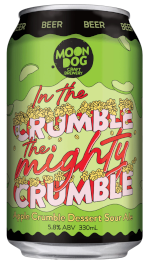

Apple Crumble Dessert Sour Ale
Moon Dog Brewery
Abbotsford, Victoria
330mL can
5.8% Alc/Vol
A-weema-weh, a-weema-weh. In the crumble, the mighty crumble, This beer is heaps alright. In the crumble, the apple crumble, This beer will heaps delight. A Weeeeeee... This Apple Crumble Dessert Sour has a tasty malt bill with a strong stewed apple flavour, delicious cinnamon and vanilla notes and a nice tartness to boot!
Malt: Ale, CaraAmber, Amber, Golden Naked Oats.
Hops: Saaz.
Yeast: Ale.
Other: Lactose, Vanilla, Cinnamon, Apple Puree, Lactobacillus.
At Moon Dog we love crafting bloody delicious beers that are fun and a little bit different. We've been doing it since 2010 at our rad brewery in the backstreets of inner Melbourne's Abbotsford. Over the years we've grown a heap, adding our tropical brewery bar paradise, the ballroom oasis function space, and a freakin' big fancy production brewery to keep more delicious beers flowing. We're a proudly independent, Australian owned craft brewery, still run by the same guys that started it all those years ago.